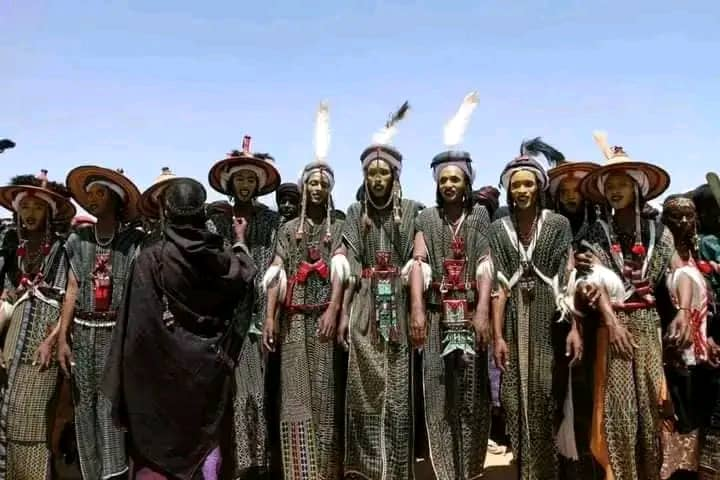
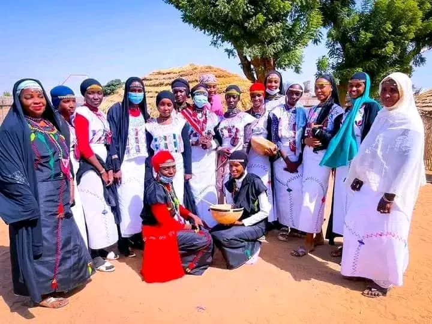
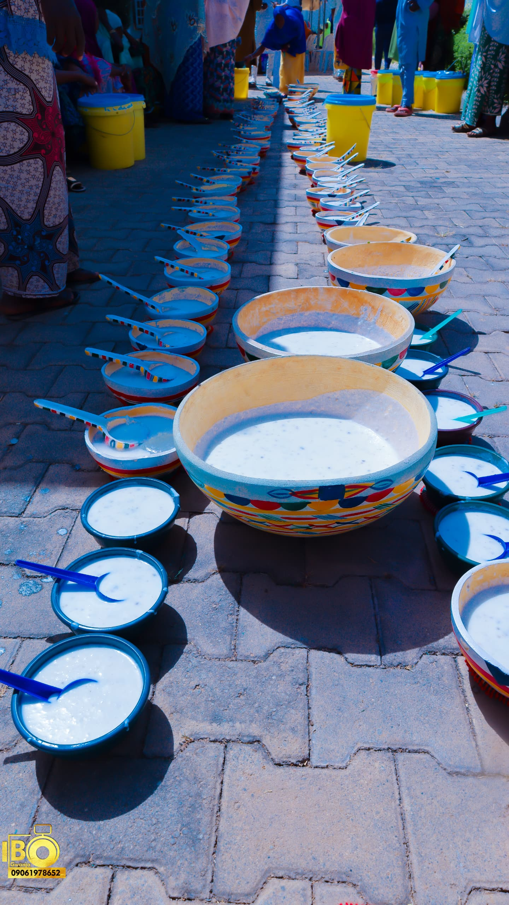

Cultural Traditions
Explore the vibrant traditions that define Fulani culture

Sharo Festival
The traditional Fulani flogging ceremony to test courage and endurance

Wedding Traditions
Colorful ceremonies with unique Fulani customs and attire

Traditional Dance
The energetic and rhythmic dances of Fulani celebrations

Fulani Cuisine
Dairy-based dishes and special meals from our pastoral tradition
Cattle Breeding
Our prized zebu cattle and traditional breeding knowledge
Islamic Traditions
The deep Islamic faith that guides Fulani life